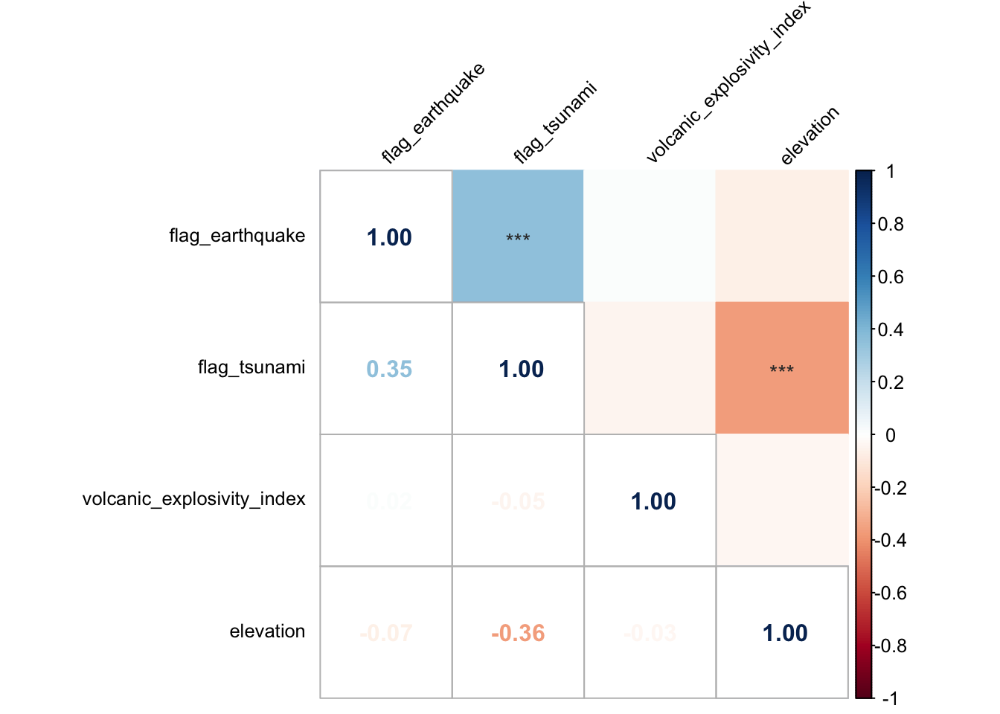

Based on the results in exploratory data analysis, it is clear that deaths and damage by volcanic eruptions can be affected by factors like earthquake, tsunami and VEI of the volcano. To better describe their relationship, in this part, We utilize descriptive data on personnel fatalities and property losses from the dataset, and since they are ordinal categorical variables, we use ordinal logistic regression to assess the association between predictors and the ordinal outcomes.
We use the polr command from the MASS package to
estimate an ordered logistic regression model. We also specify
Hess=TRUE to have the model return the observed information
matrix from optimization (called the Hessian) which is used to get
standard errors.
An ordinal variable is a categorical variable in which the levels have a natural ordering. Let \(Y\) be an ordinal outcome with \(J\) categories. Then \(P(Y≤j)\)is the cumulative probability of \(Y\) less than or equal to a specific category \(j=1,...J-1\). The odds of being less than or equal a particular category can be defined as \[\frac{P(Y≤j)}{P(Y>j)}\] for \(j=1,...J-1\) since \(P(Y>j) = 0\) and dividing by zero is undefined. The log odds is also known as the logit, so that \[log\frac{P(Y≤j)}{P(Y>j)}=logit(P(Y≤j))\] In R’s polr the ordinal logistic regression model is parameterized as \[logit(P(Y≤j))=β_{j0}-η_{1}x_{1}-η_{2}x_{2}-...-η_{p}x_{p}\]
We use the ordinal logistic regression to evaluate the effect of several factors on casualties and property losses which are the outcomes we are interested in. Predictors are tsunami, earthquake and VEI in this model. Our ordinal logistic regression model can be parameterized as: \[logit(P(Y≤j))=β_{j0}-η_{1}X_{1}-η_{2}X_{2}-η_{3}X_{3}\] where,
First, we perform a correlation analysis. If two predictors have strong correlation, we can only keep one of them in our regression model. This careful consideration ensures the avoidance of multicollinearity, thereby enhancing the precision and interpretability of our model’s results.
Correlation between the variables is shown by the following heatmap:
# Import tidied data
tidy_df =
read.csv2("data/volcanic-eruption-final.csv", sep = ",", stringsAsFactors = TRUE)
# Select variables of interest
selected_data <-
tidy_df |>
dplyr::select(flag_earthquake, flag_tsunami, volcanic_explosivity_index, elevation)
cor_matrix <- rcorr(as.matrix(selected_data), type = "spearman")
correlation_matrix <- cor_matrix$r
p_value_matrix <- cor_matrix$P
p_value_matrix[is.na(p_value_matrix)] <- 1
corrplot(correlation_matrix, p.mat = p_value_matrix, method = "color",
tl.col = "black", tl.srt = 45, tl.offset = 0.5, tl.cex = 0.8,
sig.level = c(0.001, 0.01, 0.05), pch.cex = 0.9, pch.col = "grey20",
tl.pos = "lt", insig = "label_sig", type = "upper")
corrplot(correlation_matrix, type = "lower", add = TRUE, method = "number",
tl.pos = "n", cl.pos = "n")
From the results of correlation analysis, we can see that there is a
positive correlation between flag_tsunami and
flag_earthquake. However, correlation coefficient (r) is
0.35, indicating only a moderate correlation. Therefore, we’ll include
both flag_tsunami and flag_earthquake in our
later analysis.
We also notice that there is a negative correlation between
elevation and flag_tsunami. This is probably
because volcanoes under the sea are more likely to cause tsunami.
Then we can fit the following ordinal logistic regression model:
volcano_deaths_description ~ flag_earthquake + flag_tsunami + volcanic_explosivity_index + elevation
death_df =
tidy_df |>
filter(volcano_deaths_description != "None/No Record")
logistic_model <- polr(volcano_deaths_description ~ flag_earthquake + flag_tsunami + volcanic_explosivity_index + elevation, data = death_df, Hess=TRUE)
## view a summary of the model
logistic_model |> broom::tidy() |> knitr::kable()| term | estimate | std.error | statistic | coef.type |
|---|---|---|---|---|
| flag_earthquakeTRUE | 0.5072157 | 0.2033666 | 2.494095 | coefficient |
| flag_tsunamiTRUE | 0.9231651 | 0.2488909 | 3.709115 | coefficient |
| volcanic_explosivity_index | 0.5953685 | 0.0698766 | 8.520283 | coefficient |
| elevation | 0.0002492 | 0.0000908 | 2.743274 | coefficient |
| Few (~1 to 50)|Many (~101 to 1000) | 3.1386412 | 0.0615358 | 51.005098 | scale |
| Many (~101 to 1000)|None/No Record | 4.1242602 | 0.1194732 | 34.520371 | scale |
| None/No Record|Some (~51 to 100) | 4.1251308 | 0.1194732 | 34.527652 | scale |
| Some (~51 to 100)|Very Many (~1001 or more) | 5.0484971 | 0.1728692 | 29.204137 | scale |
The estimated model can be written as:
… … …
Some people require a p value to be satisfied. In this situation, comparing the t-value to the conventional normal distribution using a z test is one method of computing a p-value. This is only true when there are infinite degrees of freedom, but large samples can well approximate it; as sample size drops, the sample becomes more biased. This method is simple to implement and is utilized in other software programs like Stata. We compute the p-values and then merge them back with the table after storing the coefficient table.
## store table
ctable2 <- coef(summary(logistic_model))
## calculate and store p values
p <- pnorm(abs(ctable2[, "t value"]), lower.tail = FALSE) * 2
## combined table
ctable2 <- cbind(ctable2, "p value" = p)
knitr::kable(ctable2)| Value | Std. Error | t value | p value | |
|---|---|---|---|---|
| flag_earthquakeTRUE | 0.5072157 | 0.2033666 | 2.494095 | 0.0126279 |
| flag_tsunamiTRUE | 0.9231651 | 0.2488909 | 3.709115 | 0.0002080 |
| volcanic_explosivity_index | 0.5953685 | 0.0698766 | 8.520283 | 0.0000000 |
| elevation | 0.0002492 | 0.0000908 | 2.743274 | 0.0060830 |
| Few (~1 to 50)|Many (~101 to 1000) | 3.1386412 | 0.0615358 | 51.005098 | 0.0000000 |
| Many (~101 to 1000)|None/No Record | 4.1242602 | 0.1194732 | 34.520371 | 0.0000000 |
| None/No Record|Some (~51 to 100) | 4.1251308 | 0.1194732 | 34.527652 | 0.0000000 |
| Some (~51 to 100)|Very Many (~1001 or more) | 5.0484971 | 0.1728692 | 29.204137 | 0.0000000 |
Interpretations:
All the four predictors (flag_earthquake,
flag_tsunami, volcanic_explosivity_index,
elevation) have p-values less than 0.05, indicating that
each of them is statistically significant at the 0.05 significance
level.
We can also get confidence intervals for the parameter estimates. If the 95% CI does not cross 0, the parameter estimate is statistically significant.
ci = confint.default(logistic_model)
knitr::kable(ci)| 2.5 % | 97.5 % | |
|---|---|---|
| flag_earthquakeTRUE | 0.1086245 | 0.9058069 |
| flag_tsunamiTRUE | 0.4353478 | 1.4109823 |
| volcanic_explosivity_index | 0.4584128 | 0.7323241 |
| elevation | 0.0000711 | 0.0004272 |
Interpretations:
The CIs for all predictors (flag_earthquake,
flag_tsunami, volcanic_explosivity_index,
elevation) do not include 0. Therefore, the parameter
estimates are statistically significant.
Another way to interpret logistic regression models is to convert the coefficients into odds ratios. To get the OR and confidence intervals, we just exponentiate the estimates and confidence intervals.
exp(cbind(OR = coef(logistic_model), ci)) |> knitr::kable()| OR | 2.5 % | 97.5 % | |
|---|---|---|---|
| flag_earthquakeTRUE | 1.660661 | 1.114744 | 2.473927 |
| flag_tsunamiTRUE | 2.517245 | 1.545500 | 4.099981 |
| volcanic_explosivity_index | 1.813699 | 1.581562 | 2.079909 |
| elevation | 1.000249 | 1.000071 | 1.000427 |
Interpretation: